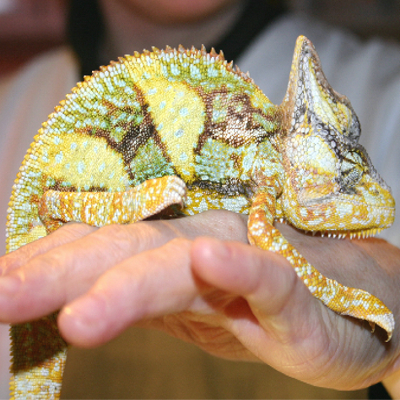

	<script>
		$(document).ready(function(){
			$('a.gallery').colorbox( { rel: 'group1', slideshow: true, slideshowSpeed: 4000, slideshowAuto: true } ); 
		});
	</script>


	<article id="praxis">

		<section id="unsere_praxis" class="aktiv">
			<div class="div-table">
				<div class="div-row">

					<div class="div-cell content1">
						<figure>
							
						</figure>
					</div>

					<div class="div-cell content2">
						<h2>Unsere Tierarztpraxis</h2>

						<div class="small-gap"></div>

						<p>
							Unsere Tierarztpraxis befindet sich in der Kaiserstrasse 33, zwischen Seidengasse und Stollgasse. 
							Die Eingangstür ist ebenerdig, Sie gehen vom Gehsteig direkt ins Wartezimmer.
						</p>
					</div>

				</div>
			</div>
		</section>

	</article>
